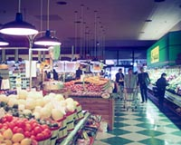
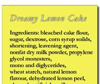
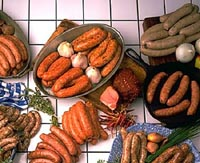

Types of Additives
Additive Safety
Problem Additives
Natural Carcinogens
|

Most people enter a grocery store and move up one aisle, down the next, picking and choosing items that they require to feed their family. A typical grocery list may include items such as eggs, milk, fresh fruit and vegetables, cheese products, bottled or frozen juice, soft drinks, snack foods like chips, ice cream or crackers and so on. Many consumers nowadays take great care at choosing "healthy" foods, reading labels for content; "low fat", "light", "no preservatives", "low sodium", "low in cholesterol". And, manufacturers are getting better at labelling products, to "show off" the best features of their product. The food label lists ingredients in descending order of amount; with additives usually listed at the end.  Take a look at the list of ingredients from four food items:
Item 1
Item 2
Item 3
Item 4 You may consume these foods on a regular basis. Are you able to identify the additives in each of these foods? Take a look at each of these items:
An additive is any substance, including any source of radiation, the use of which results, or may reasonably be expected to result in it or its byproducts becoming a part of or affecting the characteristics of food. In simpler terms, food additives are natural and synthetic chemicals that help preserve, color, and flavour food. Preservation is essential because food grown in one part of the world is often shopped to consumers thousands of miles away and eaten weeks or months after being packaged. Over 2500 substances are added to the foods we eat during their growth, processing and packaging. These additives are subjected to extremely careful laboratory screening before they are used, and scientists believe that it is unlikely that they contribute significantly to the overall cancer risk in humans. Any other ingredient that may be sold as a food or ingredient of food, such as salt, baking powder or sodium bicarbonate are not considered additives. The Food and Drug Regulations of Canada also sets separate guidelines for agricultural pesticides, veterinary drugs, materials used in food packaging, vitamins, minerals, spices and seasonings, amino acids (which comprise proteins) and flavoring preparations. Because of the separate rules, these items are not considered additives. The FDA (Food and Drug Administration) of the United States issues its own guidelines and considers some of these substances as additives. For example, ascorbic acid (Vitamin C) may be added to a product to enhance its nutritive quality and thus, falls under the definition of an additive. Are additives bad for you? Consider this: food is really a variety of chemicals that we consume for energy; energy that our body requires to function in day-to-day activities. In consuming food, we also consume both natural and synthetic substances. Some of these substances may be fatal in the right dosage. But, which ones are the problem? Let's back up a bit and take a look at the reasons we use additives in our food.
 Why Are Additives Used in Foods? Many years ago, a trip to the grocery store was a trip to the field, or woods to capture, harvest or pick your own food...in large quantities that would feed you through a long period of time. Fresh meat had to be treated to prevent soilage, vegetables and fruit had to be preserved to be used much later, and some foods had to have substances added to them for "zip" or flavor. Many hours were spent cooking and canning and it was accepted that there would be risks of food spoilage.In other words, additives were used, but some in different forms than additives of today. Meats were salted, smoked and cured, vegetables and fruits were dried, or canned and plant parts were used as flavorings. Most people today have come to rely on the many technological, aesthetic and convenience benefits that additives provide in food. There are several reasons why we use food additives:
Without the use of additives, we would see an increase in the number of deaths related to the intake of spoiled foods and the agricultural community would not be able to keep up with the demands of feeding a growing world population. |